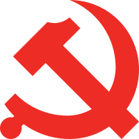
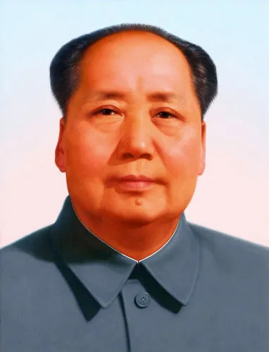

Revolução chinesa

Informação Base
Adicional
O Partido Comunista Chinês foi fundado em julho de 1921 e contava, a princípio, com 57 membros, que tinham o objetivo de mobilizar o operariado chinês. Entre esses membros, estava Mao Tsé-tung, um nome que foi fundamental no sucesso dos comunistas nos anos seguintes da história chinesa.
Após a fundação do Partido Comunista, as relações iniciais entre os comunistas e o Kuomintang foram mediadas principalmente pela União Soviética, que passou a fornecer aos nacionalistas chineses recursos importantes para o país. Isso aproximou nacionalistas e comunistas, e o Kuomintang permitiu o ingresso dos comunistas no partido desde que submetidos ao comando nacionalista. Esse período entre 1924 e 1927 ficou caracterizado como o período da luta dos nacionalistas contra os senhores separatistas que dominavam a região sul da China. Nesse período, também ocorreu o fortalecimento do movimento comunista entre os camponeses. Isso causou uma série de manifestações, que iniciaram um período de repressão ao comunismo na China.
Essa perseguição ao comunismo foi colocada em prática por Chiang Kai-shek, líder do Partido Nacionalista desde 1925, ano em que Sun Yat-sen faleceu. A guerra civil entre comunistas e nacionalistas estourou em agosto de 1927, pois a tensão entre as partes intensificou-se após comunistas terem sido massacrados pelos nacionalistas em Xangai e após o Levante de Nanchang
A guerra civil chinesa chegou ao fim quando as forças comunistas conseguiram entrar em Pequim em janeiro de 1949. Isso forçou Chiang Kai-shek, os nacionalistas e a alta burguesia chinesa a abandonar o país para a ilha de Formosa, que originou Taiwan, um país de reconhecimento internacional limitado até hoje.
Hino de Mao Tsé-tung
